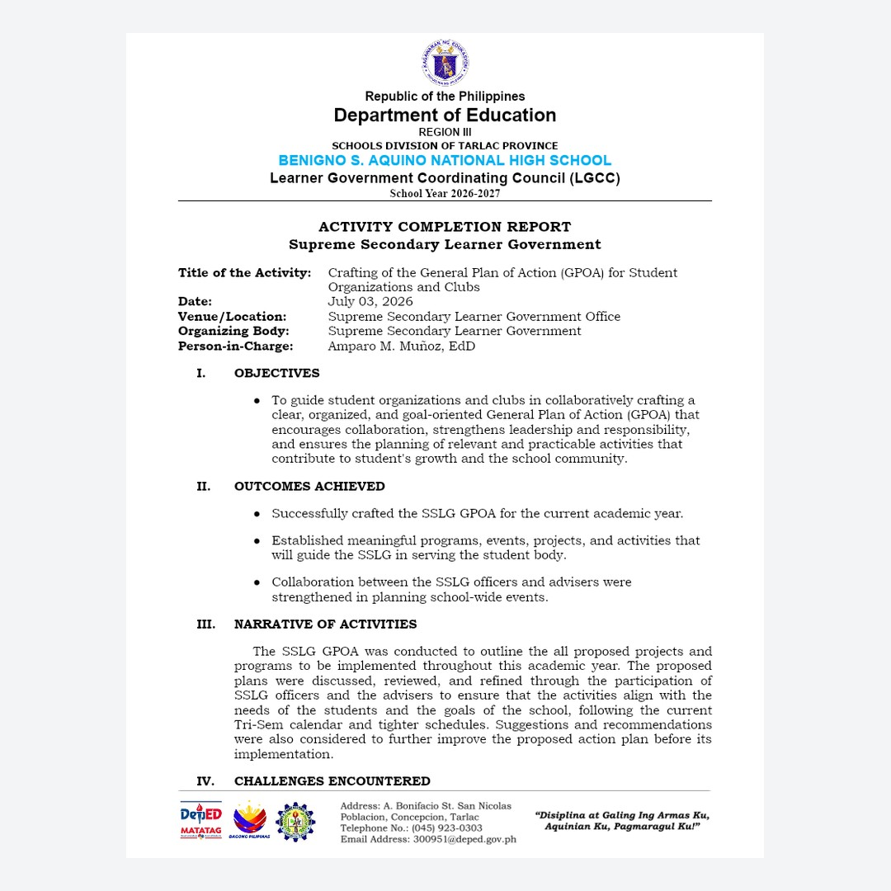
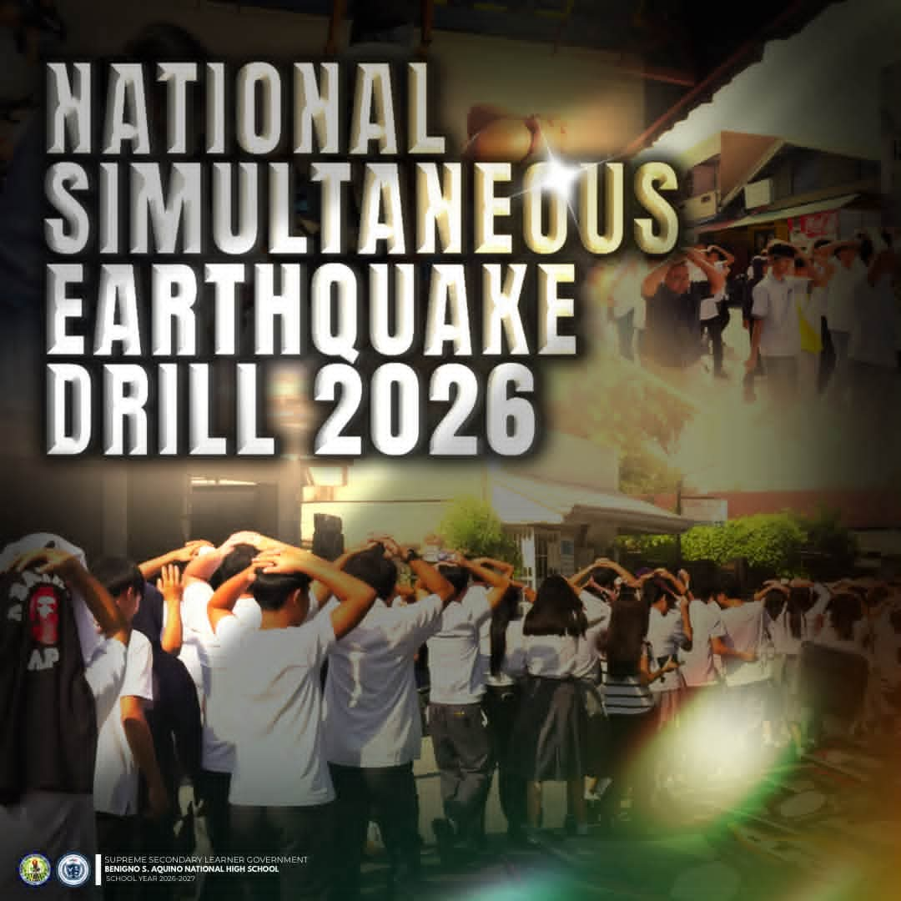
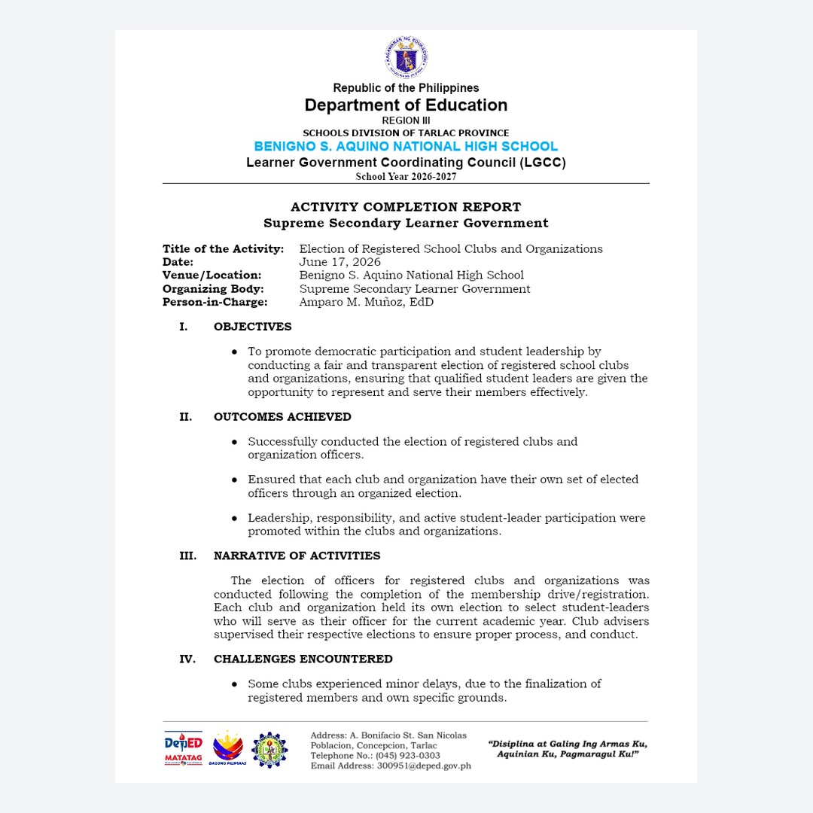
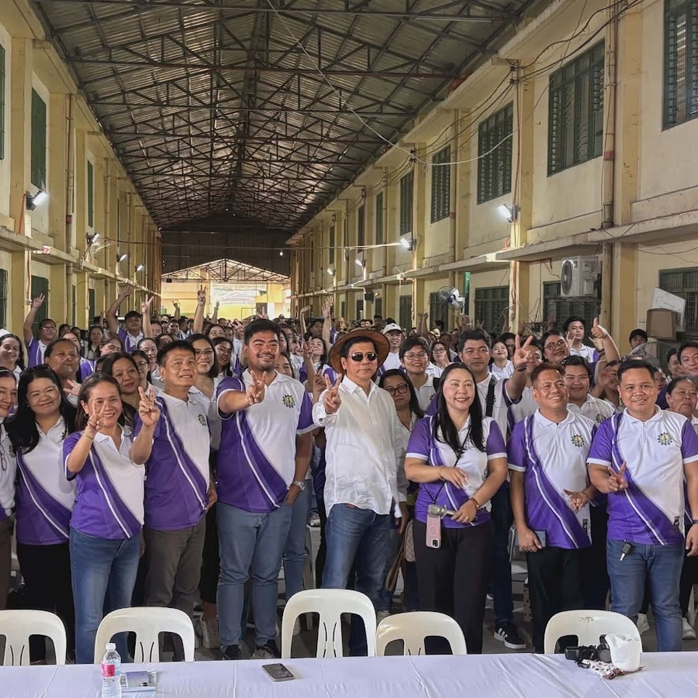

Activities
37 dated activity records across 7 learner governments. Records without a date in the source are held back until the date is confirmed.
National Students Day 2026
Two-day program for National Students Day, 17 to 18 November 2026.
School-Based Feeding Program Turnover
Turnover of the SSLG-funded feeding program for the second quarter.
Disaster Resilience Week
Drills, orientation and family preparedness kits distribution.
Nationwide Online Survey on Learner Experience and Perception of Reproductive Health Topics
Division-directed survey administration; school memorandum drafted, number unassigned.
Tree Planting for Watershed Protection
Three hundred seedlings planted with the municipal environment office.
Intramurals 2026
Four-day sports competition, with cluster-based cheering and a clean-up rotation.
Bisaya Literary Festival
Cebuano poetry, essay and storytelling contest across all grade levels.

World Teachers' Day 2026
Learner-led tribute program for the teaching and non-teaching personnel of the school.
Teachers' Day 2026
Tribute program for teaching and non-teaching personnel.
Teachers' Day 2026
Tribute program and gift-giving for teaching and non-teaching personnel.

LGCC Clean-Up Drive
Clean-up of the school grounds led by the Learner Government Coordinating Council.
Intramurals 2026
Four-day school intramurals organized by the Sports, Health and Wellness Club.
Ilocano Heritage Week
Inabel weaving demonstration, kundiman night and local food fair.
Project Tanim: School Garden
Vegetable garden behind the science building, maintained by the YES-O chapter.
Project Liwanag: Reading Corner
Solar-lit reading corner built with the English Club and the barangay council.
Project Basa
Weekly reading remediation for Grade 7 and 8 learners, run by the English and Filipino clubs.
Project Kalinga
Monthly feeding and school-supplies drive for identified learners.
Nationwide Online Survey on Digital Device Use in Schools
Administration of the national federation survey on learner access to and use of digital devices.
Learner Leadership Summit
Two-day leadership summit for SSLG officers and club presidents.
SSLG General Assembly
Presentation of the General Plan of Action and the first quarter financial report.
Indigenous Peoples Cultural Day
Celebration of the school's IP learners, with dance, music and a heritage exhibit.
Onto the Next: Leaders Induction 2026
Induction of the SSLG officers and the presidents of all recognized school clubs and organizations for School Year 2026-2027.
Disaster Resilience Week
Earthquake and fire drills with a family preparedness kit distribution.
Municipal Short Film Festival 2026
Entry and delegation to the municipal short film festival, with learner production teams.

Crafting of the SSLG General Plan of Action 2026
Consolidation of the year's programs, projects and activities into a single General Plan of Action with the Learner Government Coordinating Council.
SSLG Grade 7 Representative Elections 2026
Filing, campaign and canvassing for the Grade 7 representative seat, held across the incoming batch.

National Simultaneous Earthquake Drill 2026
Duck, cover and hold participation with post-drill evaluation and evacuation timing.
Coastal Clean-Up Drive
Shoreline clean-up with the barangay council and the YES-O chapter.
Club Fair 2026
Recruitment fair for seven recognized clubs, with booths grouped by cluster.

Election of Registered School Clubs and Organizations 2026
Election of club officers across all accredited clubs and organizations, supervised by the SSLG.

Brigada Eskwela 2026
Five-day school maintenance and clean-up drive with parents, learners and community partners.
Brigada Eskwela 2026
Community clean-up and classroom repair drive.
Brigada Eskwela 2026
Clean-up of classrooms and repainting of the covered court with parent volunteers.
Brigada Eskwela 2026
Repair and repainting of eight classrooms with parent volunteers.
Brigada Eskwela 2026
Week-long bayanihan clean-up and repair drive with parents and barangay partners.
Club Fair 2026
Recruitment fair for the twenty recognized clubs and organizations, with booths grouped by cluster.
Brigada Eskwela 2026
Five-day clean-up and repair drive with parents, alumni and barangay partners.